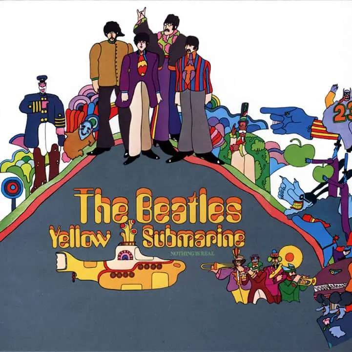

Yellow Submarine (1969)
Released as a soundtrack for an animated film of the same name, Yellow Submarine is hardly classified as meaningful in the Beatles' catalogue. Featuring just four new songs featuring the Fab Four, Yellow Submarine's back half consists of orchestral instrumentals scored by George Martin, often referred to as the Fifth Beatle. With Hey Bulldog standing out as the only memorable track with a catch piano riff, Yellow Submarine ranks lower in the Beatles' discography.
Yellow Submarine - 2:39
Only A Northern Song - 3:24
All Together Now - 2:10
Hey Bulldog - 3:11
It's All Too Much - 6:25
All You Need Is Love - 3:51
Pepperland (George Martin) - 2:20
Sea Of Time (George Martin) - 3:00
Sea Of Holes (George Martin) - 2:16
Sea Of Monsters (George Martin) - 3:36
March Of The Meanies (George Martin) - 2:19
Pepperland Laid Waste (George Martin) - 2:12
Yellow Submarine In Pepperland (George Martin) - 2:14